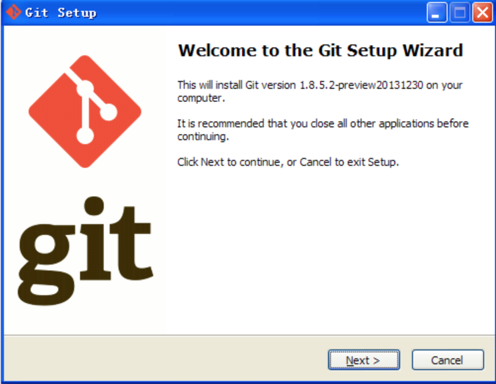
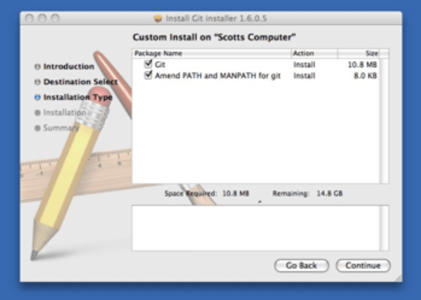
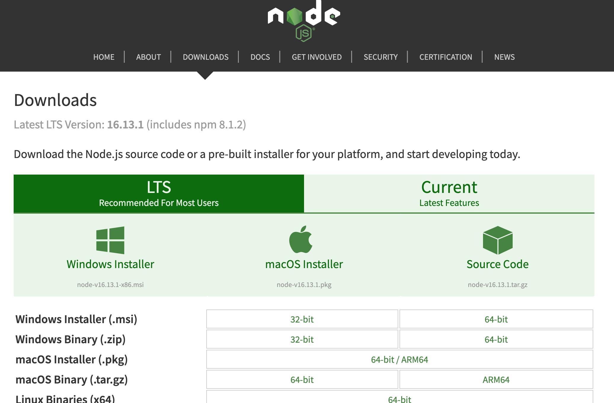
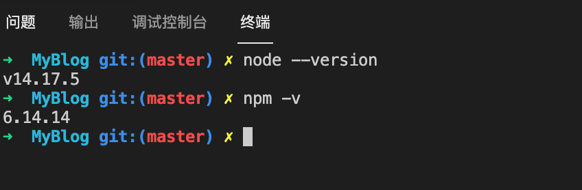
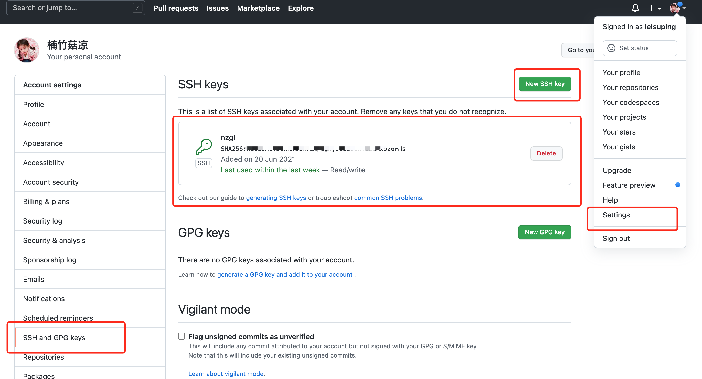
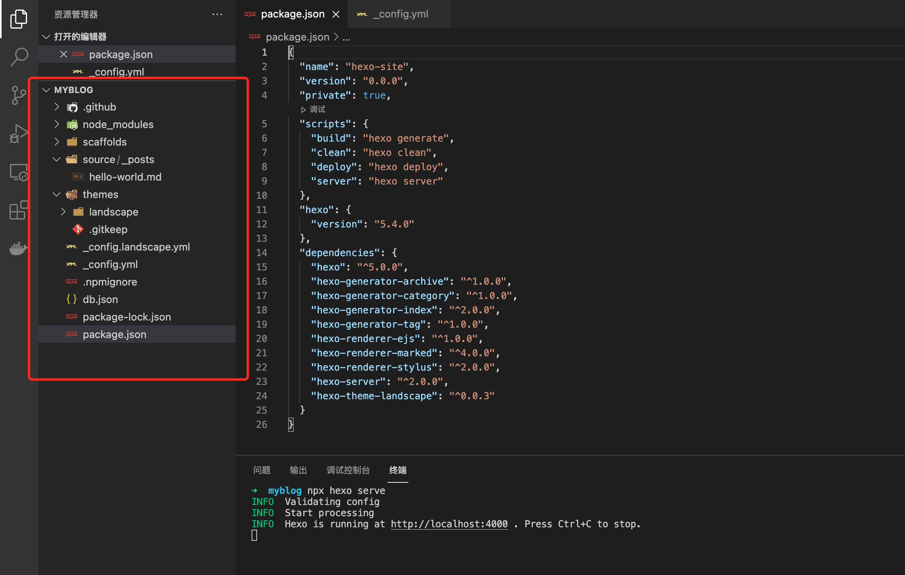
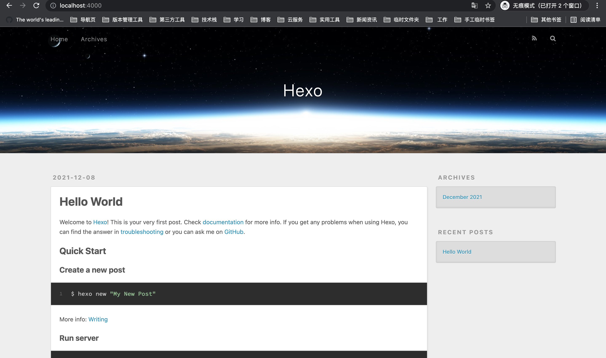
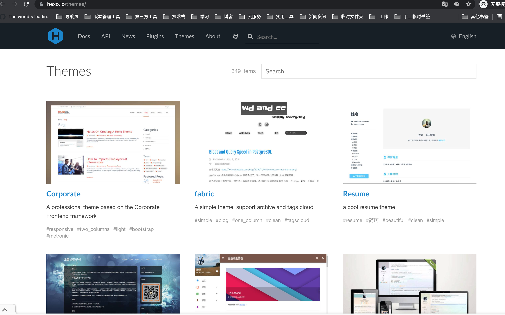

一、引题
🎯 作为一个码农，除了每日“搬砖”偶尔也会去网上看看博客吸收一点点技术精华。
慢慢的自己也有想法想要搭建属于自己的博客，虽然现在有许多技术网站都挺活跃的，但是还是想尝试一下做一个只属于自己的博客。
下面记录了个人博客搭建到部署的流程步骤，如果能够帮助到大家的话那就更好啦！
二、准备环境
安装 git
安装 nodejs(建议使用 Node.js 12.0 及以上版本)
安装 hexo（我这里是局部安装的hexo，所以用的npx执行的相关命令，如果是全局安装就不用npx来执行hexo命令）
注册GitHub账户/GitLab账户
1.安装 git
安装 git 的目的：
a.方便我们建站后获取一些hexo的资源，比如：主题、模板、插件等
b.上传代码，更新本地代码到GitHub或者GitLab上
1.Windows平台上安装 git
安装包下载地址
国内淘宝镜像

2.Mac平台上安装 git
安装包下载地址

3.配置git
安装好git之后可以在命令面板修改git配置信息（详细步骤可按照提示一步一步进行）
使用命令配置好git的用户名称和电子邮件地址（密码自己根据提示设置哦！）
$ git config --global user.name "username"
$ git config --global user.email 1234567890@qq.com查看配置信息
$ git config --list2.安装 nodejs
安装nodejs
node.js 是基于 Chrome V8 引擎的 JavaScript 运行环境，做前端的小伙伴们应该都知道且安装了nodejs环境。
当然看过hexo官方文档的小伙伴们一定也有了解到，hexo也是基于nodejs构建的。
所以还没有安装过nodejs的小伙伴可以行动起来了哟！（有想法搭建博客或者学习前端的）

选择LTS 也就是长期支持版，大家可以根据自己本地的环境下载不同平台的版本。(注意要下载安装 Node.js 12.0 及以上版本哦！)
按照提示的步骤，点击“下一步”，完成nodejs的安装。
安装成功后查看nodejs 与 npm版本（Windows平台上安装完 nodejs系统会自动配置好环境变量）
// 查看nodejs版本
node -v
// 查看npm版本
npm -v
// 能够查到版本信息即安装成功
3.安装 Hexo
Hexo 就不用我做过多的解释啦！如果你要搭建一个博客，那么 Hexo 或许是个不错的选择。
”Hexo 是一个快速、简洁且高效的博客框架。Hexo 使用 Markdown（或其他渲染引擎）解析文章，在几秒内，即可利用靓丽的主题生成静态网页。“
摘自 Hexo 官方文档
打开终端使用 npm 命令安装hexo
$ npm install -g hexo-cli
// 或者
$ npm install hexo两者的区别是第一个是全局安装，第二个是局部安装。因为我只有在博客工作区间用到hexo，所以我采用的是局部安装的方式。
在博客工作区间下执行命令“npm install hexo”局部安装hexo
4.注册GitHub账户
注册GitHub账户或者GitLab账户目的：
a.代码托管
b.部署博客
访问GitHub 地址注册一个账户
或者
访问GitLab 地址注册一个账户
注册账户步骤就不详细说明啦！
配置SSH key
setting -> SSH and GPG keys -> New SSH key

三、搭建博客
1.初始化博客
首先在本地建一个目录作为博客的工作区间，我在本地建了一个 BlogSpace 文件夹作为博客工作区间。
进入到 BlogSpace 目录下，执行命令:
// 局部安装 hexo
$ npm i hexo --save
// 初始化博客 myblog（执行命令后会在 BlogSpace 目录下自动构建一个 myblog 项目）
$ npx hexo init myblog#启动博客
npx hexo server构建好博客之后的目录：

source：资源文件夹是存放用户资源的地方，_posts 文件夹下一般存放博客文章。
themes：主题 文件夹，Hexo 会根据主题来生成静态页面。
_config.yml：根目录下_config.yml用于当前博客全局配置。
package.json：根目录下的 package.json 是博客的一些依赖，以及 Hexo 相关配置。
比如：（启动博客命令）npx hexo serve
本地运行博客效果图如下：

2.配置博客
博客的相关配置均在 根目录下的 _config.yml 文件中配置。
配置博客基本信息：
# 配置博客标题、描述、关键字、作者、语言（基础配置）
title: 楠竹菇凉
subtitle: 楠竹
description: 当然，还是会有不可逾越的界限
keywords: "楠竹菇凉"
author: nzgl
language: zh-CN配置博客主题：
关于博客的主题可以参见主题列表，当然如果自己有更好的主题也可以发布在主题列表分享。
在主题列表选一个自己喜欢的主题 “git clone 主题资源GitHub路径” 到博客根目录下的 themes 文件夹里。
然后在博客根目录下的 _config.yml 配置文件里面配置 “theme: 主题名称” 即可。

在博客根目录下的 themes 文件夹里拉取主题资源（也可以拉取主题copy到 themes 目录里）
$ git clone https://github.com/ptsteadman/hexo-theme-corporate.git# _config.yml 配置文件里面配置应用主题名称
# theme: https://hexo.io/themes/
theme: hexo-theme-corporate关于博客其他配置可以仔细阅读Hexo 官方文档
可以按照个人的喜好风格来配置，这里就请大家自由发挥吧～（下次我再跟大家分享 如何将博客到GitHub上）
相信大家都能够搭建一个独具特色的个人博客！